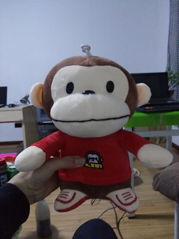
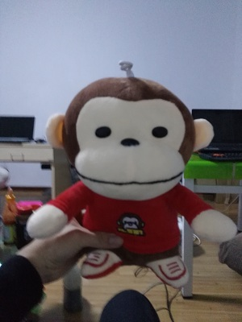
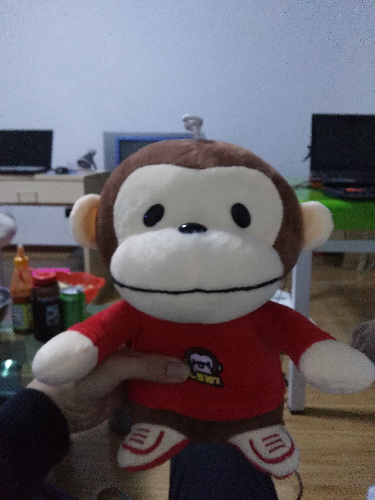
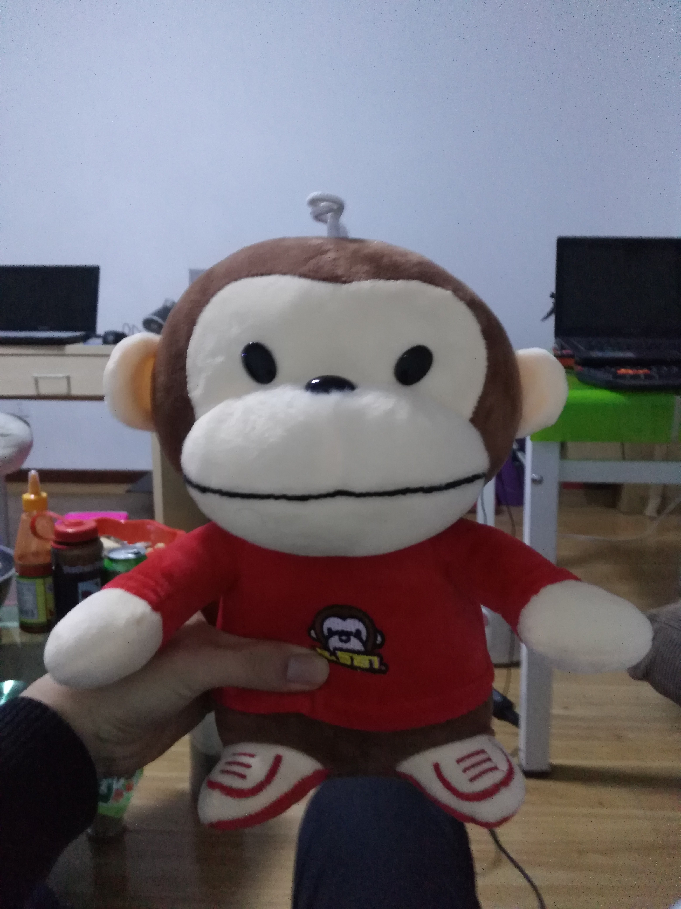

- 
- 
- 
- 
西恩历2016年3月3日西恩DOTA全军覆没
淞沪惨案(又称上海会战，外强称为EZ事变)，是西恩DOTA在中国上海举办的一次大型锦标赛，也是整个西恩DOTA历史上输的最惨、最没脸的一场战役。
淞沪惨案开始于2016年2月25日，是TI5中国未夺冠之后，西恩DOTA在上海采取主动反击的最大规模的战役。经过前期数轮鏖战，中外双方共有16支战队投入战斗，最终战役在3月2日打响，本应持续5天，但由于西恩战队在3月3日全军覆没而无疾而终。
首战失利，举国哗然
此次会战之前，历经人事调整和春节休养，西恩各路主力可谓兵强马壮、粮草充足，再加上本土作战，可谓占尽天时地利人和。然而会战首日，面对列强的轮番进攻，西恩战队竟然毫无抵抗之力，一触即溃。EHOME、VG、NB、CDEC四至精锐均遭重挫，狼狈而归。
首日战果，惨不忍睹
战报传回，无数有志青年难抑愤懑，奔赴贴吧论坛微博等舆论阵地对西恩各战队口诛笔伐。
这也难怪，西方列强谋略高超、战术过人，此乃世人皆知，败于他们之手，多少情有可原。然我西恩精锐主力EHOME面对高丽流亡残余竟然两战两溃，实为西恩民众所不能接受。
屡战屡败，溃不成军
随后西恩主力轮番与列强交手，屡战屡败。数日下来，除EHOME小捷一次，其余战队均未尝胜果。尤其是有着西恩荣耀、电竞豪门之称的LGD战队，不但1小时内连被高丽战队轻取2局，战败之后更是惨遭嘲讽，让我西恩DOTA颜面扫地，颜面扫地。
3月3日，耻辱之日
时至3月3日，经过短暂休整，西恩军团整装待发，信心满满，以破釜沉舟之势迎战列强Alliance、COL、Finatic三支主力，然并卵。
Alliance战队犹如神助，以王者归来之势一举击败西恩军团最后精锐EHOME。
LGD战队经过休整，本应能与列强弱旅COL战队一战，怎料再次惨遭屠戮，一代豪门就此跌下神坛，引人唏嘘。NB战队与Finatic实力旗鼓相当，此役开局尚可，但中期Finatic多次主动出击，逐渐占据优势，最终获胜。曾经的王者之师就此陨落，观者伤心，闻者落泪。
西恩军团全军覆没
此次惨败，西恩DOTA最后一块遮羞布被列强撕下，强者神话从此破灭。
列强无敌论不绝于耳，吹捧者有之，反对者也有之，但不管怎样，DOTAer从此再无颜面提起：毕竟3:0，我上我也行。